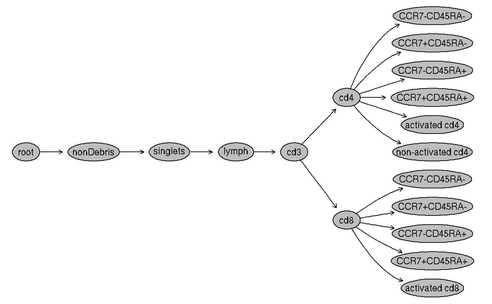
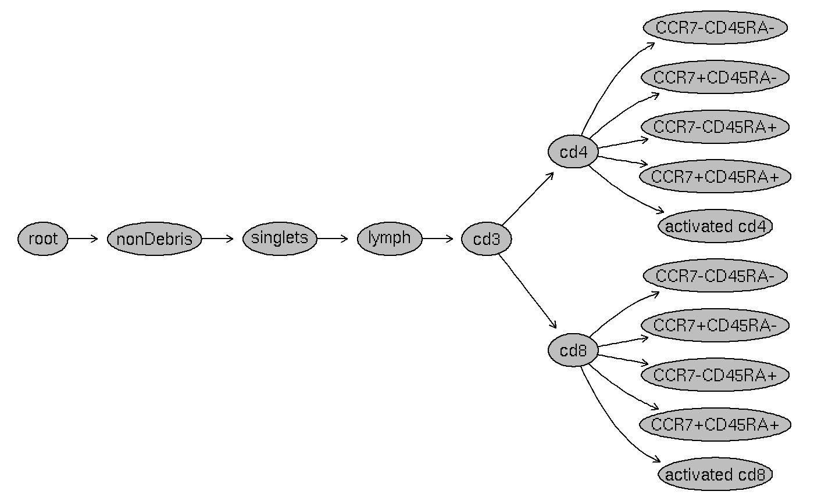

An Introduction to the openCyto package
openCytoVignette.Rmd## Loading required package: flowWorkspaceDataAn Introduction to the openCyto package
1. Introduction
The openCyto package is designed to facilitate the application of automated gating methods in a sequential way to mimic the construction of a manual gating scheme.
1.1. Manual gating
Traditionally, scientists have to draw the gates for each individual sample on each 2-D projection (2 channels) within flowJo. Alternatively, they can draw template gates on one sample and replicate them to other samples, then manually inspect the gate on each sample to do the correction if necessary. Either way is time consuming and subjective, thus not suitable for the large data sets generated by high-throughput flow cytometry, CyTOF, or “cross-lab” data analysis.
Here is one xml workspace (manual gating scheme) exported from flowJo.
flowDataPath <- system.file("extdata", package = "flowWorkspaceData") wsfile <- list.files(flowDataPath, pattern="manual.xml",full = TRUE) wsfile
## [1] "/usr/local/lib/R/cytoset/flowWorkspaceData/extdata/manual.xml"By using the CytoML package, We can load it into R,
library(CytoML) ws <- open_flowjo_xml(wsfile)
apply themanual gatesdefined inxmlto the rawFSCfiles,
gs <- flowjo_to_gatingset(ws, name= "T-cell", subset =1, isNcdf = TRUE)
and then visualize theGating Hierarchy
gh <- gs[[1]] plot(gh)
 and the
and thegates:
 This is a gating scheme for a
This is a gating scheme for a T cell panel, which tries to identify T cell sub-populations. We can achieve the same results by using the automated gating pipeline provided by this package.
1.2. Automated Gating
flowCore,flowStats,flowClust and other packages provide many different gating methods to detect cell populations and draw gates automatically.
The flowWorkspace package provides the GatingSet as an efficient data structure to store, query and visualize the hierarchical gated data.
By taking advantage of these tools, the openCyto package can create the automated gating pipeline by a gatingTemplate, which is essentially the same kind of hierarchical gating scheme used by scientists.
2. Create gating templates
2.1. Template format
First of all, we need to describe the gating hierarchy in a spread sheet (a plain text format). This spread sheet must have the following columns:
-
alias: a name used to label the cell population, with the path composed of the alias and its precedent nodes (e.g. /root/A/B/alias) being uniquely identifiable. -
pop: population patterns of+/-or+/-+/-, which tell the algorithm which side (postive or negative) of a 1-D gate or which quadrant of a 2-D gate are to be kept. -
parent: the parent population alias, whose path also has to be uniquely identifiable. -
dims: characters seperated by commas specifying the dimensions (1-D or 2-D) used for gating. These can be either channel names or stained marker names. -
gating_method: the name of the gating function (e.g.flowClust). It is invoked by a wrapper function that has the identical function name prefixed with a dot.(e.g..flowClust) -
gating_args: the named arguments passed to the gating function -
collapseDataForGating: When TRUE, data is collapsed (within groups ifgroupByis specified) before gating and the gate is replicated across collapsed samples. When set FALSE (or blank), thegroupByargument is only used bypreprocessingand ignored by gating. -
groupBy: If provided, samples are split into groups by the unique combinations of the named study variable (i.e. column names of pData, e.g.“PTID:VISITNO”). When this is numeric (N), samples are grouped by every N samples -
preprocessing_method: the name of the preprocessing function (e.g.prior_flowClust). It is invoked by a wrapper function that has the identical function name prefixed with a dot (e.g..prior_flowClust). The preprocessing results are then passed to the appropriate gating wrapper function through itspps_resargument. -
preprocessing_args: the named arguments passed to the preprocessing function.
2.2. Example template
Here is an example of a gating template.
library(openCyto) library(data.table) gtFile <- system.file("extdata/gating_template/tcell.csv", package = "openCyto") dtTemplate <- fread(gtFile) dtTemplate
## alias pop parent dims gating_method
## 1: nonDebris + root FSC-A gate_mindensity
## 2: singlets + nonDebris FSC-A,FSC-H singletGate
## 3: lymph + singlets FSC-A,SSC-A flowClust
## 4: cd3 + lymph CD3 gate_mindensity
## 5: * -/++/- cd3 cd4,cd8 gate_mindensity
## 6: activated cd4 ++ cd4+cd8- CD38,HLA tailgate
## 7: activated cd8 ++ cd4-cd8+ CD38,HLA tailgate
## 8: CD45_neg - cd4+cd8- CD45RA gate_mindensity
## 9: CCR7_gate + CD45_neg CCR7 flowClust
## 10: * +/-+/- cd4+cd8- CCR7,CD45RA refGate
## 11: * +/-+/- cd4-cd8+ CCR7,CD45RA gate_mindensity
## gating_args collapseDataForGating groupBy preprocessing_method
## 1: NA NA
## 2: NA NA
## 3: K=2,target=c(1e5,5e4) NA NA prior_flowClust
## 4: TRUE 4
## 5: gate_range=c(1,3) NA NA
## 6: NA NA standardize_flowset
## 7: tol=0.08 NA NA standardize_flowset
## 8: gate_range=c(2,3) NA NA
## 9: neg=1,pos=1 NA NA
## 10: CD45_neg:CCR7_gate NA NA
## 11: NA NA
## preprocessing_args
## 1: NA
## 2: NA
## 3: NA
## 4: NA
## 5: NA
## 6: NA
## 7: NA
## 8: NA
## 9: NA
## 10: NA
## 11: NAEach row is usually corresponding to one cell population and the gating method that is used to get that population. We will try to explain how to create this gating template based on the manual gating scheme row by row.
2.2.1. “nonDebris”
dtTemplate[1,]
## alias pop parent dims gating_method gating_args collapseDataForGating
## 1: nonDebris + root FSC-A gate_mindensity NA
## groupBy preprocessing_method preprocessing_args
## 1: NA NA- The population name is
"nonDebris"(specified in thealiasfield). - The
parentnode isroot(which is always the first node of aGatingHierarchyby default). - We use
mindensity(one of thegatingfunctions provided byopenCytopackage) as thegating_methodto gate on dimension (dim) ofFSC-A. - As a result, it will generate a 1-D gate on
FSC-A. The+in thepopfield indicates thepositiveside of the 1-D gate is kept as the population of interest. - There is no
groupingorpreprocessinginvolved in this gate, so the other columns are left blank.
2.2.2. “singlets”
dtTemplate[2,]
## alias pop parent dims gating_method gating_args
## 1: singlets + nonDebris FSC-A,FSC-H singletGate
## collapseDataForGating groupBy preprocessing_method preprocessing_args
## 1: NA NA NA- The population name is
"singlets"(thealiasfield). - The
parentnode isnonDebris. - The
gating_methodissingletGate(a function from theflowStatspackage) - As a result, a
polygonGatewill be generated onFSC-AandFSC-H(specified bydims) for each sample. - Again, the
+in thepopfield stands for"singlets+". But here it is 2-D gate, which means we want to keep the area inside of the polygon.
2.2.3. “lymphocytes”
dtTemplate[3,]
## alias pop parent dims gating_method gating_args
## 1: lymph + singlets FSC-A,SSC-A flowClust K=2,target=c(1e5,5e4)
## collapseDataForGating groupBy preprocessing_method preprocessing_args
## 1: NA NA prior_flowClust NA- Similarly,
aliasspecifies the name of population. -
parentpoints tosinglets - Since we are going to use
flowClustasgating_methodto do the 2-dimensional gating,dimsis a comma-separated string:xaxis (FSC-A) goes first,y(SSC-A) the second. This order doesn’t affect the gating process but will determine how the gates are displayed.
- All the parameters that
flowClustalgorithm accepts can be put ingating_argsas if they are typed in theR console. seehelp(flowClust)for more details of these arguments - The
flowClustalgorithm accepts the extra argumentpriorthat is calculated during thepreprocessingstage (before the actual gating). Thus, we supply thepreprocessing_methodwithprior_flowClust.
2.2.4. “cd3+” (Tcells)
dtTemplate[4,]
## alias pop parent dims gating_method gating_args collapseDataForGating
## 1: cd3 + lymph CD3 gate_mindensity TRUE
## groupBy preprocessing_method preprocessing_args
## 1: 4 NAThis is similar to the nonDebris gate except that we specify collapseDataForGating as TRUE, which tells the pipeline to collapse all samples into one and apply mindensity to the collapsed data on CD3 dimension. Once the gate is generated, it is replicated across all samples. This is only useful when each individual sample does not have enough events to deduce the gate. Here we do this just for the purpose of proof of concept.
2.2.5. CD4 and CD8
The fifth row specifies pop as cd4+/-cd8+/-, which will be expanded into 6 rows.
dtTemplate[5,]
## alias pop parent dims gating_method gating_args
## 1: * -/++/- cd3 cd4,cd8 gate_mindensity gate_range=c(1,3)
## collapseDataForGating groupBy preprocessing_method preprocessing_args
## 1: NA NA NAThe first two rows are two 1-D gates that will be generated by gating_method on each dimension (cd4 and cd8) independently:
## alias pop parent dims gating_method
## 1: cd4+ + /nonDebris/singlets/lymph/cd3 cd4 gate_mindensity
## 2: cd8+ + /nonDebris/singlets/lymph/cd3 cd8 gate_mindensity
## gating_args collapseDataForGating groupBy preprocessing_method
## 1: gate_range=c(1,3)
## 2: gate_range=c(1,3)
## preprocessing_args
## 1:
## 2:Then another 4 rows are 4 rectangleGates that corresponds to the 4 quadrants in the 2-D projection (cd4 vs cd8).
## alias pop parent dims gating_method
## 1: cd4+cd8+ ++ /nonDebris/singlets/lymph/cd3 cd4,cd8 refGate
## 2: cd4-cd8+ -+ /nonDebris/singlets/lymph/cd3 cd4,cd8 refGate
## 3: cd4+cd8- +- /nonDebris/singlets/lymph/cd3 cd4,cd8 refGate
## 4: cd4-cd8- -- /nonDebris/singlets/lymph/cd3 cd4,cd8 refGate
## gating_args
## 1: /nonDebris/singlets/lymph/cd3/cd4+:/nonDebris/singlets/lymph/cd3/cd8+
## 2: /nonDebris/singlets/lymph/cd3/cd4+:/nonDebris/singlets/lymph/cd3/cd8+
## 3: /nonDebris/singlets/lymph/cd3/cd4+:/nonDebris/singlets/lymph/cd3/cd8+
## 4: /nonDebris/singlets/lymph/cd3/cd4+:/nonDebris/singlets/lymph/cd3/cd8+
## collapseDataForGating groupBy preprocessing_method preprocessing_args
## 1:
## 2:
## 3:
## 4:As we see here, "refGate" in gating_method indicates that they are constructed based on the gate coordinates of the previous two 1-D gates. Those 1-D gates are thus considered as “reference gates” that are referred to by a colon-separated alias string in gating_args: "cd4+:cd8+".
Alternatively, we can expand it into these 6 rows explicitly in the spreadsheet. But this convenient representation is recommended unless the user wants to have finer control on how the gating is done. For instance, sometimes we need to use different gating_methods to generate 1-D gates on cd4 and cd8. Or it could be the case that cd8 gating needs to depend on cd4 gating, i.e. the parent of cd8+ is cd4+(or cd4-) instead of cd3. Sometimes we want to have a customized alias other than the quadrant-like name (x+y+) that gets generated automatically. (e.g. 5th row of the gating template)
3. Load gating template
After the gating template is defined in the spreadsheet, it can be loaded into R:
gt_tcell <- gatingTemplate(gtFile, autostart = 1L) gt_tcell
## --- Gating Template: default
## with 29 populations definedBesides looking at the spreadsheet, we can examine the gating scheme by visualizing it:
plot(gt_tcell)
 As we can see, the gating scheme has been expanded as we described above. All the colored arrows source from a
As we can see, the gating scheme has been expanded as we described above. All the colored arrows source from a parent population and the grey arrows source from a reference population(/gate).
4. Run the gating pipeline
Once we are satisfied with the gating template, we can apply it to the actual flow data.
4.1. Load the raw data
First of all, we load the raw FCS files into R by ncdfFlow::read.ncdfFlowSet (it uses less memory than flowCore::read.flowSet) and create an empty GatingSet object.
fcsFiles <- list.files(pattern = "CytoTrol", flowDataPath, full = TRUE) ncfs <- read.ncdfFlowSet(fcsFiles) fr <- ncfs[[1]] gs <- GatingSet(ncfs) gs
## A GatingSet with 2 samples4.2. Compensation
Then, we compensate the data. If we have compensation controls (i.e. singly stained samples), we can calculate the compensation matrix by using the flowStats::spillover function. Here we simply use the compensation matrix defined in the flowJo workspace.
compMat <- gh_get_compensations(gh) gs <- compensate(gs, compMat)
Here is one example showing the compensation outcome: 
4.3. Transformation
All of the stained channels need to be transformed properly before the gating. Here we use the flowCore::estimateLogicle method to determine the logicle transformation.
chnls <- parameters(compMat) trans <- estimateLogicle(gs[[1]], channels = chnls) gs <- transform(gs, trans)
Here is one example showing the transformation outcome: 
4.5. Gating
Now we can apply the gating template to the data:
gt_gating(gt_tcell, gs)
Optionally, we can run the pipeline in parallel to speed up gating. e.g.
gt_gating(gt_tcell, gs, mc.cores=2, parallel_type = "multicore")
4.6. Hide nodes
After gating, there are some extra populations generated automatically by the pipeline (e.g. refGate).
plot(gs[[1]])
 We can hide these populations if we are not interested in them:
We can hide these populations if we are not interested in them:
4.7. Rename nodes
And rename the populations:
gs_pop_set_name(gs, "cd4+cd8-", "cd4") gs_pop_set_name(gs, "cd4-cd8+", "cd8")
plot(gs[[1]])


4.9. Apply a gating method without csv template
Sometimes it will be helpful (especially when working with data that is already gated) to be able to interact with the GatingSet directly without the need to write the complete csv gating template. We can apply each automated gating method using the same fields as in the gatingTemplate, but provided as arguments to the gs_add_gating_method function. The populations added by each of these calls to gs_add_gating_method can be removed sequentially by gs_remove_gating_method, which will remove all populations added by the prior call to gs_add_gating_method. These two functions allow for interactive stagewise prototyping of a gatingTemplate.
For example, suppose we wanted to add a CD38-/HLA- sub-population to the cd4+cd8- population. We could do this as follows:
gs_add_gating_method(gs, alias = "non-activated cd4", pop = "--", parent = "cd4", dims = "CD38,HLA", gating_method = "tailgate") plot(gs[[1]])

The addition of this population can then easily be undone by a call to gs_remove_gating_method:
gs_remove_gating_method(gs) plot(gs[[1]])
